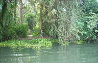
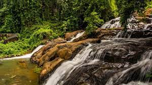

Vagamon or Wagamon is a hill station located in the Central Travancore region of Kerala, India. It is a warm and friendly place with cool climate as the temperature between 10° and 23°C during a summer midday. It is situated 1,100 m above sea levelErattupetta is the closest town, from where Vagamon is about 25 km, another major city is Moolamattom which is about 21 km from Vagamon.
You can also reach there via Kottayam Kumali road [KK road] by taking a turn from Peerumedu. Also you can reach there from Iddukki dam site. Even though there are KSRTC buses to Wagamon, it is best if you have your own vehicle. All the roads leading to the place are a biker's dream. Beware of those blind turns and steep sides. For those looking for more adventure can take the Ernakulam-Thodupuzha-Kanjar route.

Kumarakom Bird Sanctuary
Kumarakom Bird Sanctuary (also known as Vembanad Bird Sanctuary) is situated at Kumarakom in Kottayam taluk of Kottayam district in the Indian state of Kerala, on the banks of Vembanad Lake. Set in the Kerala Backwaters, the bird sanctuary is a favourite haunt of migratory birds.
The sanctuary is spread over 14 acres (5.7 ha) on the southern bank of the Meenachil River River.There is a system of paths for moving around within the sanctuary. Beyond the sanctuary, one can take a boat ride in Vembanad Lake or along the Meenachil River.

Aruvikuzhy Waterfalls
Aruvikuzhy Waterfalls is a waterfall in Kottayam district in the Kerala state of India. It is situated 2 km from Pallickathode and 7.5 km from Pampady. The waterfall measures about 30 ft in height and active only during monsoon. In summer the river almost dries up.Aruvikkuzhi Waterfalls are loved for the natural beauty they possess along with the quaint charm of the surrounding rubber plantations. The trails surrounding the area along with the cool water falling from over 100 ft. make it a picnicker’s paradise. Families are regularly seen camping in this wonderful spot in Kottayam. One gets the distinct feeling of being hugged directly by nature when you stand here.